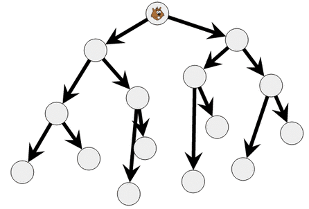

Solution
Il y a beaucoup de solutions possibles. En voici par exemple deux :


Il y a beaucoup de solutions possibles. En voici par exemple deux :


Il y a beaucoup de solutions possibles. En voici une :

C'est de l'informatique !
Ces questions introduisent une notion fondamentale en informatique : les arbres binaires.
Il s'agit d'une structure dans laquelle, en partant d'un cercle
appelé la racine le d'arbre (et placé en général tout en haut du schéma),
on peut rejoindre tous les autres cercles en suivant des chemins où à chaque
étape on a exactement deux directions possibles.
La solution que nous proposons pour la version simple n’est pas un arbre binaire. En revanche, c’est le cas des solutions des 2 versions plus difficiles, car les règles proposées obligent à dessiner un arbre binaire
Regardez l'arbre représenté dans la solution de la version difficile.
En partant de la racine (le cercle avec castor), on peut atteindre les 14 autres cercles en suivant 3 flèches ou moins.
Si on avait le droit de suivre 4 flèches, on pourrait atteindre 30 cercles différents. En gros, à chaque fois que l'on rajoute une flèche, on peut atteindre environ deux fois plus de cercles.
Cettre structure d'arbre est très utilisée en informatique, car elle permet de ranger des données selon une certaine logique et ensuite d'accéder très rapidement à toutes ces données.